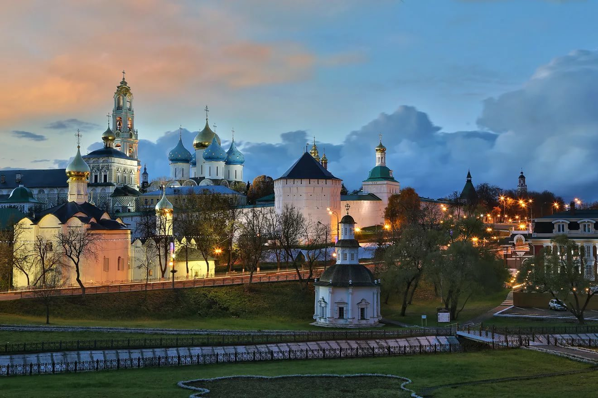

Сергиев Посад

Се́ргиев Поса́д (Загорск с 1930 по 1991 год) — город в Московской области России. Административный центр[3] Сергиево-Посадского городского округа Московской области.
В городе находится ставропигиальный мужской монастырь Русской православной церкви, объект Всемирного наследия ЮНЕСКО — Троице-Сергиева лавра. Входит в туристический маршрут «Золотое кольцо России».
До XVI века
«В 1340-х годах — описывает Епифаний Премудрый, составивший в начале 15 века жизнеописание Сергия Радонежского, — в глухом лесу на холме Маковец у слияния речки Кончуры с лесным ручьём Вондюгой братьями Варфоломеем (в монашестве Сергий) и Стефаном была срублена келья и небольшая церковь в честь Троицы.» Вокруг кельи и церкви образовался небольшой монастырь в виде городка, обнесённого оградой, где несли службу монахи, последователи Сергия Радонежского.
В 1380 году князь Дмитрий Донской, по позднейшему преданию, прибыл в обитель Сергия Радонежского за благословением перед битвой на Куликовом поле с войсками Золотой Орды[9].
Территория будущего посада входит в Дмитровское княжество.
XVI—XVIII века
В 1540 году в монастыре начинается строительство оборонительных сооружений — кирпичных стен с башнями. Иван Грозный способствовал превращению обители в мощную крепость. Кроме того, с восточной стороны от стен вырыт ров, к югу выкопан огромный пруд, а в окружающих монастырь оврагах сделаны запруды. С 1559 по 1585 год строится массивный Успенский собор, прообразом которого является Успенский собор Московского Кремля.